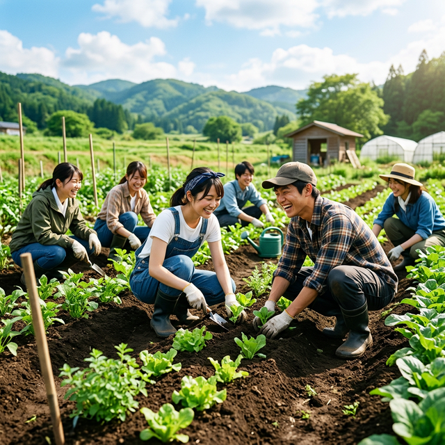
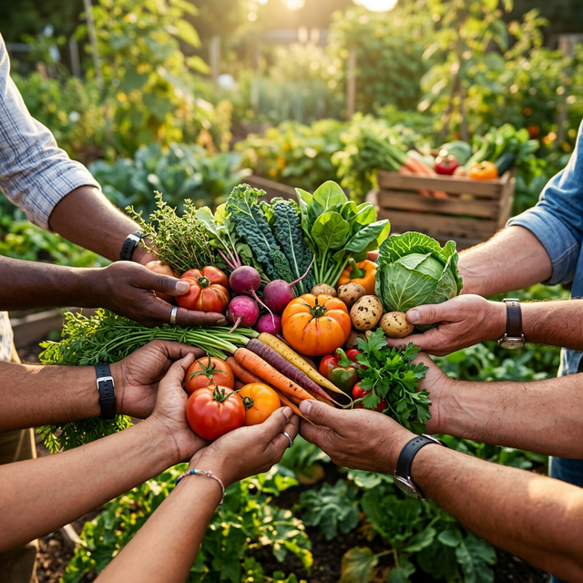
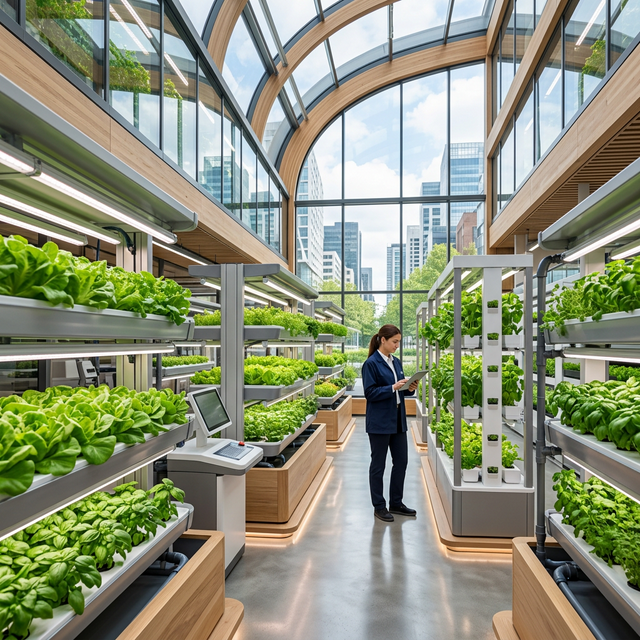

テクノロジーと自然が共鳴する、
新しい農業のかたち。

日本の美しい農地が、いま、静かにその役目を終えようとしています。高齢化や後継者不足により、多くの農地が放置され、農業はビジネスとして成り立ちにくくなっているのが現状です。
Dachaclubは、そんな失われゆく農地に新たな価値を見出し、畑を通して「心豊かな暮らし」を皆様にお届けしたいと願っています。
畑は単なる生産の場ではありません。そこは、人と人、人と自然が繋がり、誰もが自分らしい充実した時間を過ごせる「もうひとつの場所」となるはずです。
誰もが農業を身近に感じ、そこから得られる豊かな食と経験が、地域や社会全体へと巡っていく未来を目指して。
Dachaclubのmissionを達成するための道筋をご紹介します。
耕作放棄地を持つ地方自治体や個人と連携し、休耕地を継続的に発掘・確保します。土壌改良やインフラ整備を行い、利用可能な状態に再生します。これにより、環境問題の解決にも貢献します。

開墾した畑を用い、イベントや収穫体験などを通して、畑と地元の人との接点を構築します。畑コミュニティをつくり、農業関係人口を増やします。

既存の農業のビジネスモデルでは収益が立たなくなってきています。我々は農業を1次産業から第3次産業のビジネスモデルに転換することによって、持続可能な農業の形を実現します。
これらのアプローチを通じて、Dachaclubは単に畑を貸すだけでなく、持続可能な社会づくりを目指していきます。
Dachaclubのサービスを詳しく見る